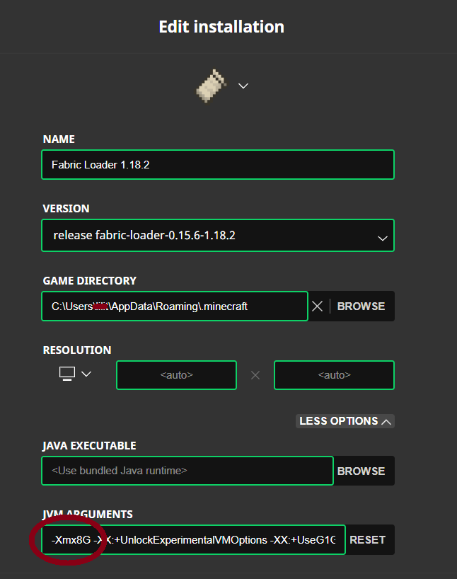
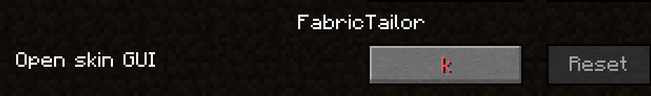

Witamy na Origin SMP
ip serwera: hellishducks.aternos.me:40400
keepInventory true
Pobierz paczkę modów: Mody
Uruchom Launcher Minecrafta i zmień wersję na 1.18.2
Uruchom grę, a gdy się załaduje wyłącz ją
Wyszukaj na komputerze %appdata% i wejdź do folderu .minecraft

Sprawdź, czy znajduje się w nim folder mods
Jeśli nie, utwórz go
Wypakuj pobraną paczkę modów do folderu mods
W folderze mods znajdź plik fabric-installer-1.0.0.jar i uruchom go
Zmień wersje według poniższego screenshota i upewnij się, że lokalizacja instalacji kończy się na folderze .minecraft

Uruchom Launcher Minecrafta i zmień wersję na Fabric Loader 1.18.2

Wskazane jest, by w zakładce Installations zmienić ilość RAMu z 2G na 4 lub 8
Have fun ğ“…
Oh The Biomes You'll Go [byg] — dodaje 80+ biomów z nowymi blokami
Terralith — dodaje biomy
Castle Dungeons — Dodaje strukturę w postaci zamku
Repurposed Structures — daje nowe warianty struktur z gry
Mo' Structures — dodaje nowe struktur z zachowaniem klimatu gry, skupione na RPG
RPG-HUD — m.in. pokazuje ilość użyć na narzędziach, stopień zużycia zbroi oraz paski życia innych mobów
Basic Nether Ores — dodaje podstawowe rudy do Netheru
Blockus — dodaje nowe bloki
Explorer's Compass — dodaje kompas, który wyszukuje struktury i do nich prowadzi
Journeymap — dodaje mapę z możliwością robienia waypointów
Mermod — dodaje naszyjnik zmieniający w wodzie nogi w ogon, który można barwić
Pehkui — dodaje komendy pozwalające zmieniać różne skale np. wysokość, zasięg, obrażenia od upadku, itp.
Roughly Enough Items — pozwala sprawdzać receptury przedmiotów, włącznie z tymi z modów
Icarus — dodaje skrzydła, z którymi można latać lepiej niż z elytrą
Blockshifter — dodaje blok pozwalający przesuwać inne bloki, np. do łatwego tworzenia bram
Travelers Backpack — dodaje plecaki, które można stawiać na ziemi i wlać do nich można wodę oraz lawę
Trinkets — dodaje sloty na naszyjnik i elytrę/skrzydła
Convenient mobGriefing — rozdziela komendę /gamerule mobGriefing na 4, pozwalając zablokować tylko szkodliwe efekty wybuchów czy kradzieży bloków przez Endermany
Tree Harvester — pozwala ścinać całe drzewa na raz
Fabric Tailor — dodaje komenty na zmianę skina (wymaga zmiany przycisku)

Rechiseled — daje nowe warianty bloków przy użyciu dłuta
Simple Hats — dodaje ponad 200 czapek
Origins — główny mod dodający originy. Daje Enderiana, Merlinga, Phantoma, Elytriana, Blazeborna, Aviana, Arachnida, Shulkera i Feline
Origins: Umbrellas — dodaje parasol, który chroni przed deszczem i słońcem
Environmental Armor — dodaje przedmioty ułatwiające przeżycie wodnym rasom na lądzie oraz na słońcu